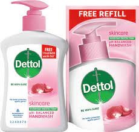

Here are a few products on showcase. You can order them by simply clicking on the button below them.
Nescafe Classic Coffee(Jar)
Price: $349/-
100% PURE COFFEE: NESCAFE Classic Instant Coffee is made from handpicked Robusta beans from South India that are
slow-roasted to achieve the signature NESCAFE aroma. The perfect coffee flavour is extracted & locked in every
coffee bean for the perfect cup at any time.
Brand: Nescafe
Item Form: Ground
Flavour: Unflavoured
Caffeine Content Description: Caffeinated
Roast Level: Light_roast
Package Information: Jar
Diet Type: Vegetarian
Net Quantity: 90.0 gram
Number of Items: 1
Special Ingredients: Cinnamon
Dettol Liquid Handwash
Price: $209/-
Natural cleansers: Contains more than 85% naturally derived ingredients and plant derived cleansers, Contains no
TCC or Triclosan.
Item Form: Liquid
Skin Type: Sensitive
Brand: Dettol
Scent: Skincare
Material Feature: Vegetarian
Material Type Free: Soap Free, TCC Free, Triclosan Free
Age Range (Description) Adult
Number of Items 1
Net Quantity: 1500.0 millilitre
Special Feature: Organic

India Gate Super Basmati
Price: $238/-
India Gate Super is a full grain Basmati Rice. Along with enjoying the taste and texture with your favorite
dishes, it is ideal for making a number of premium dishes which look superb and accentuate your senses.